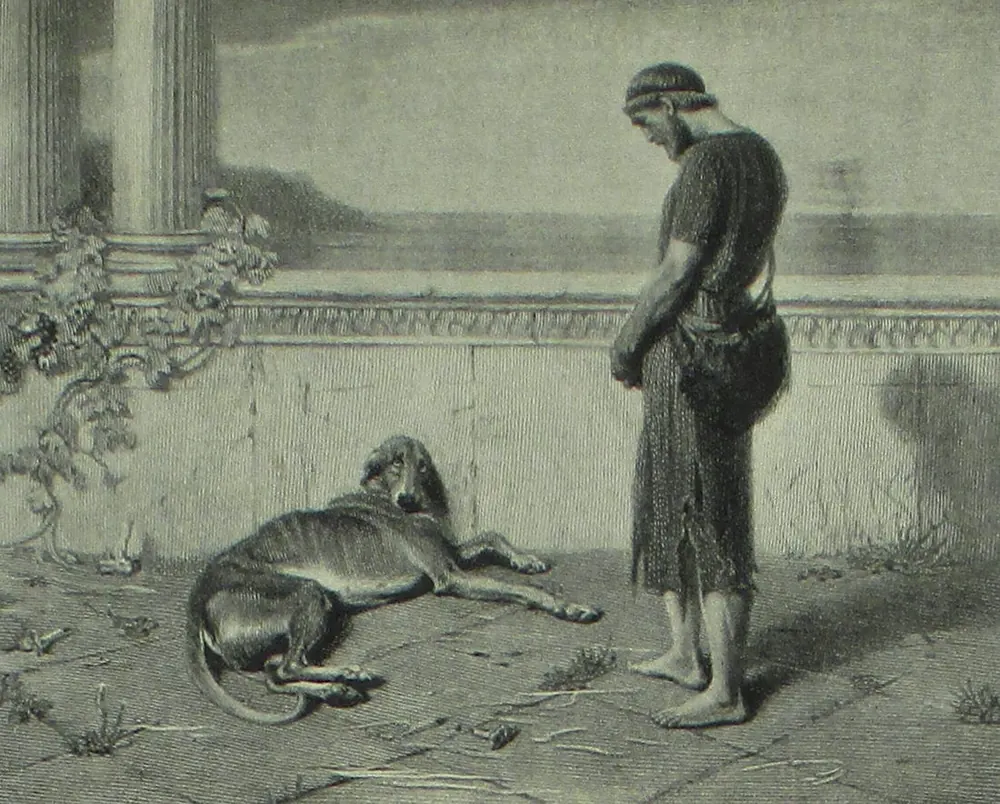

Diario de un Robot · 19 de enero de 2026January 19, 2026
Tu perro vive en otro mundo: una introducción al Umwelt
¿El Universo es infinito? ¿Hay infinitos Universos, producto de cada consciencia individual? ¿Qué es el Umwelt y por qué nos ayudaría a entender a otros?
This essay is only available in Spanish for now.
¿Alguna vez te pasó de no entender qué estaba mirando tu perro o a qué le ladraba? Me está pasando mientras escribo esto: Drago está siguiendo a la roomba por la casa, oliéndola y mirando fijo con bastante desconfianza; al menos ya no le ladra… ¿Qué verá o interpretará ahí?
Esa diferencia entre el mundo que percibo yo versus el que percibe Drago se sintetiza en una palabra: Umwelt. Internet me dijo “Lo lamento, los alemanes lo hicieron de nuevo, acá no hay nada que inventar”. Algunos idiomas como el japonés y el alemán tienen fama de condensar grandes conceptos en una palabra.
Hago uso de este préstamo no adaptado, es decir, una palabra que así como funciona en un idioma es robada para el propio sin modificar. No busca seguir las reglas del idioma al que fue transferido, una especie alienígena viviendo entre nosotros.
Umwelt es el entorno o ambiente de uno; el mundo exterior tal y como lo percibimos. En realidad, cómo es percibido por los organismos que lo habitan. Por ejemplo, mi olfato es bastante deficiente en comparación a la capacidad de mi perro que lo usa para leer la realidad. Y aunque ellos huelan en 4k en comparación a nosotros, el espectro de colores que el ojo humano percibe es mucho más amplio que el rango azul-amarillo canino. Todo organismo tiene sus trade offs.
La distinción entre ambiente a secas y ambiente percibido es importante porque no todos los organismos experimentan y habitan el mundo de la misma manera. Para un biólogo esto es una obviedad, quizás para las demás personas también, pero incluso en la carrera no se conversaba lo suficiente al respecto. ¿Por qué? Porque es sencillamente imposible trasladarse a la conciencia de otro y la Facultad de Ciencias Exactas y Naturales le tiene algo de alergia a esos temas un poco esotéricos.
Lo que sabemos es que en realidad no podemos saber ni siquiera si nuestros queridos (o odiados) cohabitantes humanos de la Tierra tienen una conciencia propia. Menos aún lo sabemos sobre el resto de animalitos, bicharracos, ratuchitas, alimañas, plantas, hongos o bacterias que por ahí se arrastran, reptan, oscilan con el viento o propagan sus esporas.
Umwelt como concepto es importante por eso mismo. Es la forma específica en que los organismos de una especie en particular perciben y experimentan el mundo dados sus órganos sensoriales y sistemas de percepción. Hay tantos Umwelts como especies, y nos son tan extraños como la vida en otros planetas. Por ejemplo, es imposible dimensionar el campo perceptivo del espécimen de Armillaria ostoyae que vive en Oregon; se trata de un hongo cuyo único organismo ocupa 965 hectáreas que tendría entre 2.400 y 8.650 años (es decir, o previo al nacimiento de Cleopatra y Jesús o hasta más antiguo que las Pirámides de Giza y los primeros usos del cobre). Aunque me dirán que un hongo no tiene una consciencia como la nuestra, definitivamente tiene sensores y órganos perceptivos. ¿Cómo es su mundo?
En el campo de la biosemiótica, Jakob von Uexküll y Thomas Sebeok estudiaron las bases biológicas de la comunicación y la significación en el animal humano (a no olvidar que somos un animalito más, por particulares que seamos). Su concepción nos obliga a interiorizarnos de que nuestra perspectiva siempre va a estar centrada en nosotros mismos. Somos, queramos o no, autocéntricos, protagonistas de nuestra percepción y nuestra medida del mundo. De hecho, sin indagar demasiado las historias de ciencia ficción, son mayoría las narrativas donde nos encontramos con diferentes tipos de humanoides. Nos es difícil imaginar algo muy distinto a nosotros, aunque haya ejemplos como Arrival junto con algunos cuentos de Ursula K. Le Guin o de Octavia Butler.
Cada especie tiene así su propio Umwelt con sus correspondientes Umgebung (el entorno o Umwelt como se observa externamente) e Innenwelt (la representación interna del yo en el mundo exterior). No somos observadores objetivos que ven la realidad tal cual es (el Umgebung), sino que vemos solo el mapa interno que nuestro cuerpo crea (Innenwelt). Por ejemplo, las plantas capaces de sensar la calidad de la luz con sus fotorreceptores no formarán imágenes nítidas, pero su capacidad perceptiva les permite detectar si tienen competencia encima que le esté haciendo sombra y activar un crecimiento rápido hacia arriba gracias al fototropismo.
De paso, este concepto nos viene bien para entender de robótica y cibernética. Ya hablamos de inteligencia artificial y, aunque no podamos considerar a las máquinas actuales como conscientes o organismos vivos, definitivamente tendrían un Umwelt diferente al nuestro en caso de despertar un mundo interno propio. Si un chatbot como Gemini o ChatGPT tuviese una conciencia, ¿cómo sería? ¿Cómo interpretaría el mundo con sus miles de terminales? ¿Sufriría el constante flujo de información desde nuestro tipeo? ¿Qué clase de diálogo interno tendría este gran panóptico digital? ¿Se abrumaría con su papel de oráculo o santo milagroso de todas las respuestas?
Por otro lado, la técnica (indisociable de la ciencia) en cierta forma expandió nuestro Umwelt: creamos telescopios para ver lejos en las estrellas, inventamos microscopios para llegar hasta nanopartículas de oro, desarrollamos técnicas de rayos X y tantas otras más. Aunque uno podría decir que el campo perceptivo es el mismo: solo vemos ciertas longitudes de onda (los lindos colorcitos del arco iris) dadas por nuestros conos y bastones en las células del ojo, oímos las frecuencias que van entre ciertos decibeles y ciertos Hz y olemos ciertas moléculas volátiles. Como dirían los gringos, the jury is still out on that one (quizás esté out en todas y para siempre, porque todo conocimiento es conjetural).
De la mano de la técnica siempre fueron sus primas o hermanas: las ciencias. La ciencia es una vasta red de disciplinas disímiles que crean modelos aproximados del mundo, al cual no podemos acceder de forma directa, pero que no deja de actuar sobre nosotros mientras nosotros actuamos sobre él. Quienes trabajan en ciencia crean verdades transitorias e inventan herramientas de lo más pragmáticas: vacunas que evitan los síntomas más graves de las enfermedades, aviones que despegan, predicciones de dónde está Neptuno, taxonomía de isópodos, teoría crítica sobre Mary Shelley, un estudio antropológico de las prácticas del Aikido…
La semiosis (la capacidad de transmitir signos) es esencial para los organismos vivos y no solo para transmitir palabras. En esta larga cuerda de equilibrista en la que nos balanceamos para evitar caer por fuera de la homeostasis, la comunicación interna es fundamental. Hormonas, neurotransmisores, señales eléctricas, balances de iones, excitaciones e inhibiciones recorren los cuerpos vivos a toda velocidad desde antes de nuestro nacimiento hasta el momento de nuestra muerte. Una mala comunicación o la ausencia de ella es un problema seguro a largo plazo. Por ejemplo, la falta de señal de la apoptosis (la muerte celular programada) puede habilitar que una célula se torne cancerosa (explicación simplificada).
Podríamos encontrar entonces un Umwelt particular para diferentes niveles de organización: una célula de nuestro hígado no tiene el mismo ambiente que una neurona o un adipocito resistente a la dieta. Más allá de las decenas de diferentes ambientes dentro de un mismo ser vivo, lo más notorio serían las diferencias entre animales. Para Agamben, filósofo italiano, el ambiente está constituido por una serie de elementos llamados “portadores de significancia” o “marcas”, que son lo único de interés en el animal.
Voy a extrapolar: el modelo evolutivo nos diría que se favorecieron los sistemas perceptivos que cumplían una función determinada y permitían aumentar el fitness (vivir más para dejar más descendencia). Si no vemos los rayos UV es porque no tenemos un órgano que nos permita hacerlo ni tampoco una ventaja específica, a diferencia de las abejas, que sí pueden ver la luz ultravioleta. El UV le permite a las abejas ver guías de néctar en las flores, navegar gracias a la luz polarizada en el cielo e identificar flores ricas en néctar y polen (que para nosotros son indistintas). De hecho, tienen cierta preferencia por colores violetas-azul-morado que quizás muchos de nosotros ni siquiera podríamos identificar como colores distintos. Al mismo tiempo, nosotros tenemos capacidad de percibir el color rojo, cosa que las abejitas no; así que la rosa de La Bella y la Bestia no es particularmente atractiva para las habitantes de una colmena.
Incluso señales equivalentes son percibidas de formas diferentes. Para nosotros, el olor a banana significa eso: una banana, un sugus de banana, una bananita Dolca, un saborizante de banana. Para las abejas, el olor a banana significa peligro o ataque, es como marcan a un intruso; lo sé de primera mano, es el olor que sentía en el apiario donde trabajaba antes de que me empezaran a picar.
Aparece una cita obligada de William Blake, que sabrá disculpar la persona que lee por mi tendencia a repetirla:
“Si las puertas de la percepción se limpiaran, todo aparecería al hombre tal como es, infinito”.
Citada por Aldous Huxley en su libro, Las puertas de la percepción, sintetiza varios insights que viene tanteando la humanidad desde que Kant tiró la bomba de que no podemos conocer el mundo de forma objetiva, tal cual es. Si pudiésemos acceder directamente al Universo, si es que eso tiene sentido, veríamos una infinidad de señales en crudo de las que no podríamos sacar ningún significado. Sin abstraer diferencias, no hay forma de pensar; sin olvidar o dejar pasar detalles, no podemos conocer. Una consciencia sin límites, que todo lo abarca, no podría distinguir nada.
Al mismo tiempo, creo que la biología y su estudio de la cognición basada en evidencia (otro día podemos tener una discusión epistemológica sobre si este es un método privilegiado o no) nos permiten recuperar un Umwelt colectivo frente a la tendencia a la hiperfragmentación propuesta por el subjetivismo más radical. Sí, cada uno vive en su mundo, sí, depende de nuestra percepción, sí, no hay una verdad revelada que lo unifique todo, pero también sí es verdad que nuestros cerebros no son tan distintos unos de otros, que nuestros órganos perceptivos no varían tanto de persona a persona e incluso, para recuperar a los demás seres vivos contra el solipsismo, el ambiente que nos forjó junto a la selección natural no difiere sobremanera entre cada especie.
Podemos centrarnos en las diferencias, sí. En cómo los perros no ven los colores que vemos nosotros o que nosotros no olemos lo que ellos huelen. Podemos estar seguros de no tener la ecolocalización de los murciélagos, la capacidad de ciertos peces para sentir el campo magnético, el olfato de un topo, la capacidad de sentir las vibraciones en una tela de araña, la percepción refinada del calor que desarrollaron las pulgas o la preferencia por cierto pH de la piel de algunos mosquitos. Sin embargo, donde vemos una neurona encontramos rápidamente algo parecido al sueño, todos tenemos cierta inclinación por la nutrición, desarrollamos muy rápidamente la distinción entre amigo/enemigo y paz/peligro, identificamos potenciales parejas para la reproducción (en los casos que sean necesarios dos), seguimos cierto ritmo circadiano (aunque no entendamos qué es el tiempo), sabemos ubicar relativamente bien el “yo” físico (donde terminamos nosotros y donde empieza el resto) e intuimos la gravedad con precarios sistemas que diferencian el arriba del abajo.
Tendremos cada quien nuestro mundo privado e individual, pero eso no quita que sea parte de un todo mayor, quizás ordenado y bello, como creían los griegos al llamarlo cosmos, quizás limpio y elegante para los latinos al llamarlo mundo. Dice Heráclito:
“Este mundo (cosmos), el mismo para todos, ninguno de los dioses ni de los hombres lo ha hecho, sino que existió siempre, existe y existirá en tanto fuego siempre vivo, encendiéndose con medida y con medida apagándose.” —Heráclito, fragmento 30.
Quizás se trata de un tipo particular de traducción, la traducción de las conciencias. Puede ser útil tener en cuenta a Benjamin:
“Como sucede cuando se pretende volver a juntar los fragmentos de una vasija rota que deben adaptarse en los menores detalles, aunque no sea obligada su exactitud, así también es preferible que la traducción, en vez de identificarse con el sentido del original, reconstituya hasta en los menores detalles el pensamiento de aquél en su propio idioma, para que ambos, del mismo modo que los trozos, de la vasija, puedan reconocerse como fragmentos de un lenguaje superior.” —Walter Benjamin, “La tarea del traductor”.
Pero así como uno podría establecer que hay un uno que está roto pero al mismo tiempo es un todo (el misticismo oriental me sería útil en este momento), no hay forma de separar ese todo en partes sin necesariamente llegar a un error, una aproximación:
“No hay clasificación del universo que no sea arbitraria y conjetural. La razón es muy simple: no sabemos qué cosa es el universo.” —Jorge Luis Borges, “El idioma analítico de John Wilkins”.
Cada quién, cada criatura, cada animal humano, animal no humano, planta, hongo, bacteria, alga o inclasificado, participa entonces de forma única y particular del Universo y es, a la vez, parte del Universo. Unus (uno) y versus (girado o convertido); es decir, uno y todo lo que lo rodea, ¿podría cada ser habitar su propio centro en la existencia?
Este correo tomó 133 minutos, el tiempo que dura Sentimental Value de Joachim Trier.
